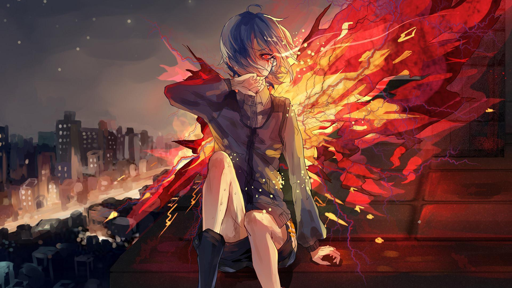

TOKYO GHOUL
SHONEN
In Tokyo, humans coexist with ghouls, who pose a threat by masquerading as humans. Ken Kaneki, a college student, becomes a half-ghoul after an encounter with Rize Kamishiro, diving into the ghouls' world. Saved by Touka Kirishima, he begins a secret life, struggling to integrate into both human and ghoul societies.